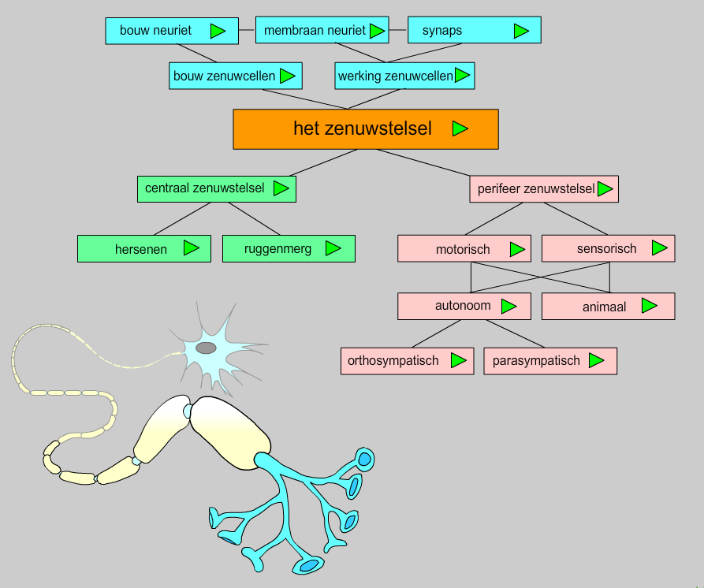

Alles wat een mens doet en alle processen in het menselijk lichaam worden geregeld door het hormoonstelsel en/of het zenuwstelsel. Ze zorgen er samen voor dat alles goed verloopt en als iets dreigt mis te gaan dat er op een adequate manier gereageerd wordt. In deze opdracht richten we ons weer op het zenuwstelsel. Dit keer kijken we wat verder. Het menselijk zenuwstelsel heeft een bepaalde bouw en elk deel van het zenuwstelsel heeft weer een andere functie. Deze opdracht is er op gericht dat je meer te weten komt over de bouw en de functies van de verschillende delen van het menselijk zenuwstelsel.
Gebruik bij het maken van de opdrachten de volgende link!
linkOpen de link en probeer te begrijpen hoe het totale zenuwstelsel is gebouwd. Hier zie je de afbeelding met het overzicht van het menselijk zenuwstelsel. Bekijk deze afbeelding goed. Je vindt een aantal nieuwe delen van het zenuwstelsel die je nog niet kent (het autonome zenuwstelsel met het parasympatische en (ortho) sympatische zenuwstelsel).
Kopieer de afbeelding in een eigen document.
Zet de namen van de delen van het zenuwstelsel onder elkaar, onder de afbeelding. Klik op de groene knoppen en lees de informatie aandachtig.
-
Het centraal zenuwstelsel
hersenen
ruggenmerg
-
Perifeer zenuwstelsel
animaal
-
autonoom
orthosympatisch
parasympatisch
Geef de functie van ieder deel van het zenuwstelsel (kort en bondig). Maak gebruik van de informatie die je hebt gelezen.
| Naam | Functie |
|---|---|
| hersenen | Het aansturen van lichaams functies en het verwerken dan informatie |
| ruggenmerg | Signalen door het lichaam sturen |
| animaal zenuwstelsel | Het zenuwstelsel voor dingen waar je je bewust voor bent, bijvoorbeeld het bewegen van je arm of geluid dat je hoort |
| orthosympatisch autonoom zenuwstelsel | Het deel van het autonoom zenuwstelsel dat ervoor zorgt dat het lichaam zich klaarmaakt voor actie |
| parasympatisch autonoom zenuwstelsel | Het deel van het autonoom zenuw stelsel dat ervoor zorgt dat het lichaam in rust stand komt |
Zoek een afbeelding van het autonome zenuwstelsel op internet en plak de afbeelding in het document.

Wat valt je op als je beide delen van het autonome zenuwstelsel met elkaar vergelijkt?
Ze doen exact het tegenovergestelde
Welk deel van het zenuwstelsel wordt denk je door koffie geactiveerd? Leg je antwoord uit.
Het orthosympatische deel, omdat dat het deel is dat ervoor zorgt dat je meer energie gaat reserveren
Bedenk een onderzoek waarmee je de door jou gegeven verwachting en hypothese kan bewijzen. Aandachtspunten hierbij zijn;
- Je hebt alle materialen, organismen en tijd tot je beschikking.
- Maak een materiaallijst.
-
Maak een methode. Denk daarbij aan de volgende tips
- Denk aan het principe van de herhaling.
- Denk eraan dat je steeds maar één variabele hebt.
- En bedenk welk organisme.
- Denk aan de hoeveelheid organismen die je gebruikt.
Onderzoeksvraag: Hoeveel stijgt de hartslag als het lichaam van een mens in orthosympatisch staat is?
Materialen lijst:
- Vrijwilliger
- Hartslag meter
- Koffie
Methode: Als eerste geef ik de vrijwilliger de tijd om in rust te komen. Wanneer dat zo is meet ik de hartslag. Wanneer de vrijwilliger dan de koffie heeft gedronken, meet ik de hartslag nog een keer en bekijk het verschil